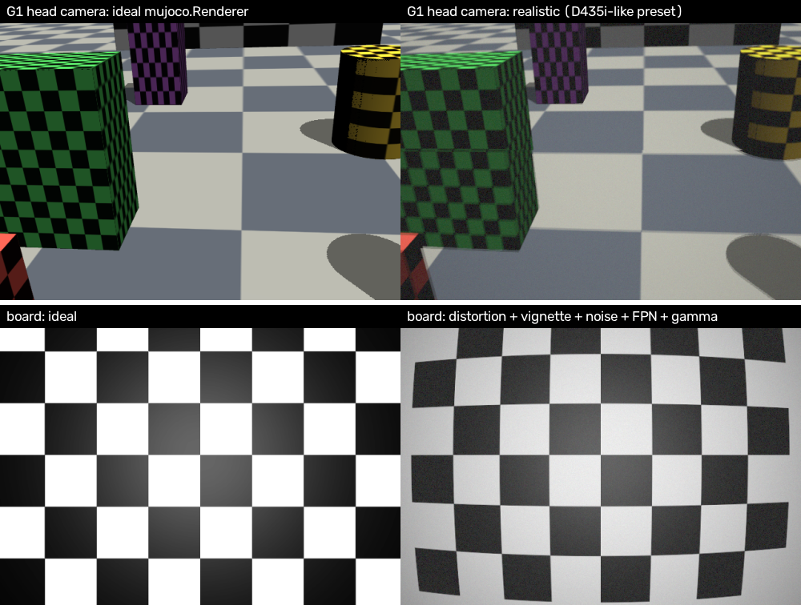

01Problem
A simulator camera draws one ideal instant of the scene. The camera on a robot does not: its lens distorts and vignettes, its sensor adds noise and auto exposure, the image smears with motion and skews under a rolling shutter, depth has holes and flying pixels, and frames arrive late, jittered and sometimes not at all. A policy trained on ideal renders meets all of this for the first time on the real robot.
A calibration fixes the geometry once, but latency, rolling shutter and motion blur change with every frame and every head motion, and noise, exposure and drops come from the sensor and the transport. No calibration step removes them; they have to be handled, and that handling can be developed in simulation.
02What it models
Every effect is identity by default, and nearly every parameter is a physical knob. The image pipeline does not depend on the simulator: MuJoCo and Genesis are supported, and any other renderer only has to hand over its frames.
| Stage | Effects |
|---|---|
| Optics | Brown-Conrady distortion with a margin render, vignetting or measured flat field, depth of field, lens / OLPF blur |
| Exposure & sensor | EV offset, auto exposure and white balance with time constants, shot / read noise, PRNU / DSNU, Bayer mosaic, gamma, quantisation |
| Temporal | Motion blur over the exposure window, rolling shutter by readout band, camera-mount vibration |
| Depth | Edge holes and flying pixels, z²-scaled axial noise, minimum and maximum range |
| Timing | Frame rate and phase, latency, Gamma-distributed jitter, frame drops, sample-and-hold delivery to the control loop |
| Environment | Colour matrix, mains-light flicker under a rolling shutter, lens dust and veiling glare, scene lighting and walkers |

Why a post-process, not a plugin
Motion blur and rolling shutter need several instants inside one exposure, which only a layer around the renderer can provide. MuJoCo sensor plugins cannot render, and Genesis camera sensors refuse delay and jitter.
One config, every simulator
The camera is described by an MJCF camera in every
case, so one CameraConfig means the same camera in MuJoCo and in Genesis, and a fitted config drives both.
03Measured performance
RTX 5080, idle GPU.
per 640×480 frame on the MuJoCo GPU path, GL colour buffer taken straight into CUDA
per camera with 64 cameras batched on one renderer (≈ 22 ms in total)
per environment at 256 batched Genesis environments with the Madrona renderer, frames kept on the GPU
| Path | When | Measured |
|---|---|---|
| MuJoCo, CPU | one camera, no torch in the process | ≈ 3.2 ms / frame |
| MuJoCo, GPU | the frame goes to a CUDA policy anyway | ≈ 0.3 ms / frame |
| MuJoCo, virtual sensor | a GL-only sim process exports frames by dma-buf to a CUDA effects process, published on an axon zero-copy topic | three processes |
| Genesis, batched (OpenGL) | G1 window mode, 13 sub-renders + depth | 7.2 ms / env at 16 envs |
| Genesis, Madrona | large batches, every env in one GPU pass | 1.12 ms / env at 256 envs |
04Agreement between simulators
The same camera config in MuJoCo and Genesis gives the same images up to the renderers' own shading, measured on the WIRobotics ALLEX head camera and a Unitree G1:
| Check | Result |
|---|---|
| Motion blur + rolling shutter silhouettes, G1 yawing at 2.5 rad/s | IoU median 0.995, centroid 0.46 px |
| Checkerboard K / D recovered through each pipeline | fx / fy within 0.14 %, corners within 0.70 px |
| Depth on targets | median difference 0.15 mm |
| Physics with the Genesis camera on vs off | identical trajectories |
05Calibrating against a real camera
Calibrated preset
Use your K, D and mount; everything a calibration does not reach is on at typical values and can be randomised, including per-episode mount perturbation.
Full fit
One capture session (checkerboard, flat and dark fields, grey chart,
noise stack, LED blink) becomes a camera_config.json plus its uncertainty, validated by fitting synthetic
captures back to a known config.
Online observer
Keeps estimating K, noise and latency while the robot moves; in MuJoCo across 20 seeds: focal length 0.3 %, principal point 2.3 px, latency 2 ms, every |error| / σ ≤ 3.
python scripts/calibrate.py calib_data --out camera_config.json --report calib_report06White paper
Realistic Cameras for Genesis →
What the Genesis backend adds on top of Genesis, how the mirror-scene rendering works, where it agrees with MuJoCo and what it does not support, with figures and videos on Unitree G1, WIRobotics ALLEX and Apptronik Apollo.
07Quickstart
from physicalai_sim2real_camera import CameraConfig, CameraStream, SimCamera
cfg = CameraConfig(640, 480, dist=(-0.3, 0.1, 0.001, -0.001, 0.0), vignette=1.0,
sigma_shot=0.02, sigma_read=0.005, gamma=2.2,
fps=30, latency_s=0.05, jitter_k=2, jitter_theta=0.005, drop_prob=0.05)
cam = SimCamera(model, "cam", cfg) # wraps a mujoco.Renderer
rgb, z = cam.render(data, depth=True) # what the real camera would deliver
stream = CameraStream(cam, cfg) # fps / latency / jitter / drops, driven by sim timeRGB and depth are complete through calibration, the GPU and batch paths, the virtual sensor and the online
observer in MuJoCo; the Genesis backend agrees within the numbers above. Next: real recordings of the target camera
through the observer, and further simulators through the same ingest entry point.